Benutzerhandbuch
Burkhard Obgeröker
Stand:
Juli 2013
Version: 0.9
Vorwort
Anmelden
Startseite
Aktenverwaltung
Kostenblatt
Rechnungen
Schriftverkehr
Adressen
Kalender
Buchhaltung
Server-Schema
Entity-Relationship-Modell
PHPAdvocat entstand aus der Not heraus: Kommerzielle Programme waren nicht nur zu teuer, sie waren zudem noch auf Windows als Betriebssystem festgelegt. Um dieser Misere zu entgehen entstand ein Produkt, das Web-Basiert in PHP programmiert wurde und somit auf sehr unterschiedlichen Plattformen installiert werden kann. Die Bedienung erfordert lediglich einen HTML-Browsern der - optional - noch JavaScript beherrschen sollte. Damit ist so ziemlich jedes Betriebssystem abgedeckt.
Da in PHPAdvovat durchaus sensible Daten gespeichert werden, ist der Zugang beschränkt durch eine Benutzerverwaltung. Die Identifikation erfolgt dabei durch die verwendete Datenbank, so dass dort eine gültige Benutzer/Passwort-Kombination hinterlegt sein muss. Diese Kennung muss auf dem Startbildschirm eingegeben werden, um in das System zu gelangen.
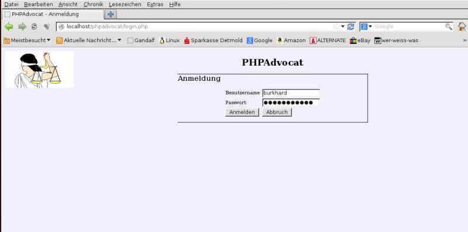
Nach erfolgreicher Anmeldung erscheint der Willkommensbildschirm, auf dem eine Übersicht über den aktuellen Status gegeben wird. Neben den heute vorliegenden Terminen wird der aktuelle Finanzstatus angezeigt. Ein positiver Wert wird grün, ein negativer rot unterlegt, um die Bedeutung hervorzuheben. Die aktuellen Termine sind mit einem Link ausgestattet, über den mit einem Mausklick die entsprechende Akte geöffnet werden kann.
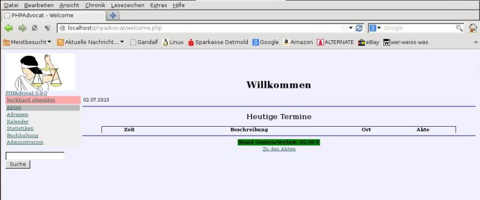
Auf der linken Seite des Bildschirms erscheint das
Navigationsmenü, über das die einzelnen Module erreicht werden
können. Ein grauer Balken markiert dabei die momentan ausgewählte
Position.
Im linken Bereich unter dem Menü befindet sich ein
Suchbereich über den nach Aktenbezeichnungen und/oder nach Personen
gesucht werden kann. Das Ergebnis wird in einem separaten Fenster
dargestellt
Ein Mausklick auf den Punkt "Akten" erzeigt
eine tabellarische Übersicht über die zurzeit offenen Akten.
Alle bereits geschlossenen Akten werden nur dann dargestellt, wenn
unterhalb des Menüs die Checkbox "alle Akten" aktiviert
wird.
Durch einen Klick auf die Akten-Registernummer wird die
jeweilige Akte geöffnet, während durch einen Klick auf den Namen
des Mandanten dessen Adresse bearbeitet werden kann.
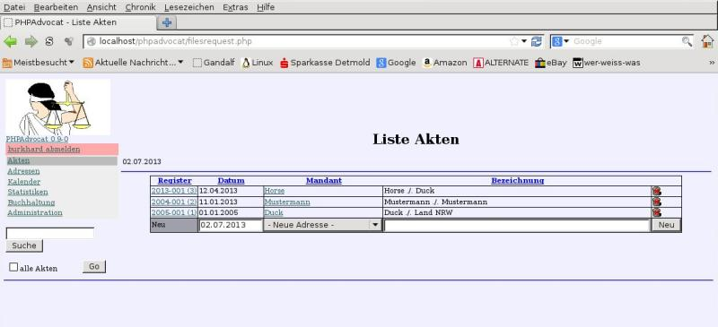
Die letzte Zeile der Tabelle ermöglicht die Neuanlage einer Akte, was allerdings eine bereits vorhandene Adresse des Mandanten erfordert. Wird statt dessen der Eintrag "Neue Adresse" gewählt, so erscheint automatisch die Eingabemaske für die neue Mandantenadresse. Nach erfolgter Eingabe wird diese einer neu angelegten Akte hinzugefügt und letztere Als erster Listeneintrag angeboten.
Wird eine Akte ausgewählt, so bietet sich folgendes Bild:
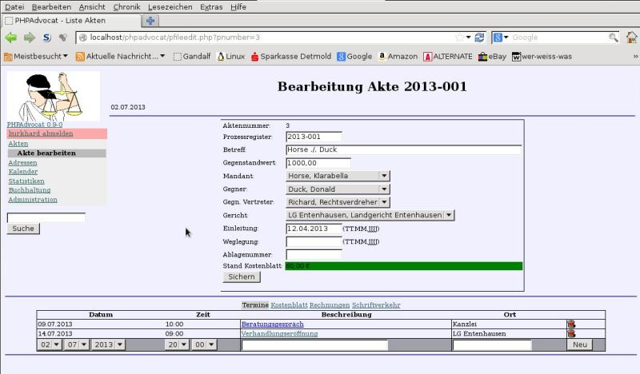
Im oberen Bereich bietet sich die Übersicht über die
Standard-Daten der Akte, sowie der finanzielle Stand des
Kostenblattes. Wie in der Wilkommensseite wird ein positiver Wert
grün, ein negativer rot unterlegt.
Werden in diesem Bereich Daten
verändert, müssen sie aktiv gespeichert werden, indem der Knopf
"Sichern" angeklickt wird. Anderenfalls gehen sie verloren.
Dieses Verhalten ist durch die Web-Technik vorgegeben und kann
lediglich durch aufwändige JS-Programmierung der eines einer nativen
Client nachempfunden werden. Da dieses aber zudem die Browserauswahl
sehr einschränkt und weitere Sicherheitsschwächen nach sich ziehen
kann, wurde bewusst darauf verzichtet.
Der untere Bereich dieser
Maske stellt den Detailbereich dar, in dem von der Akte abhängige
Daten angezeigt werden. Die listenartig angezeigten Details (hier:
Termine) können über die untere Zeile der Tabelle hinzugefügt oder
jeweils durch einen Klick auf die "Mülltonne" am rechten
Rand gelöscht werden. Sofern JavaScript aktiv ist, erfolgt dort
zunächst eine Sicherheitsabfrage.
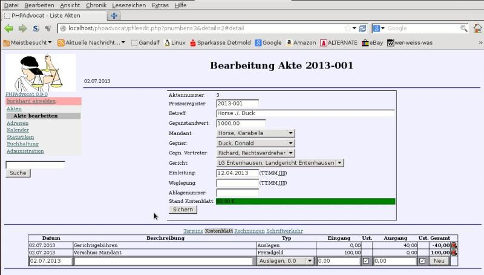
Der Link "Kostenblatt" führt zu der Anzeige des Kostenblattes, dessen Einträge ebenfalls in Tabellenform angezeigt werden. Das Hinzufügen eines Eintrages ist allerdings mit einer Besonderheit verbunden. Der Kostenart-Typ wird in einer Drop-Down-Liste angeboten, wobei zusätzlich zu der Bezeichnung der mit dem Typ verbundene Mehrwertsteuer-Satz angezeigt wird. Ist dieser größer als 0, so wird die entsprechende Mehrwertsteuer aus dem angegebenen Betrag berechnet und eingetragen. Abhängig von der Checkbox in der Spalte "Ust." wird bei gesetztem Haken davon ausgegangen, dass ein Brutto-Wert eingetragen wurde, während bei nicht gesetztem Haken von einem Netto-Betrag ausgegangen wird. Die Einträge werden dabei im Buchhaltungsmodul eingetragen, so dass gleichzeitig die Buchhaltung weitergeführt wird.
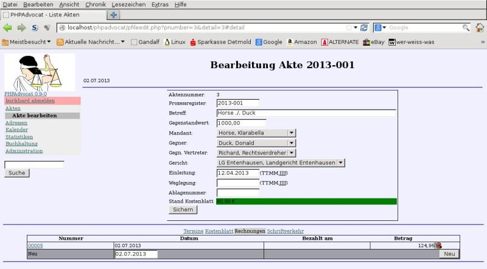
Soll eine Rechnung geschrieben werden, so wird in der dargestellten Liste zunächst ein Eintrag erwartet, der über den Knopf "Neu" entsteht. Das angegebene Datum - das jeweils mit dem aktuellen Datum vorbelegt wird, stellt in der gedrucken Version das Rechnungsdatum dar. Die Tabellenform ist erforderlich, da pro Akte mehrere Rechnungen erstellt werden können. Ein Klick auf die Rechnungsnummer führt dann in die Rechnungsbearbeitungs-Maske.
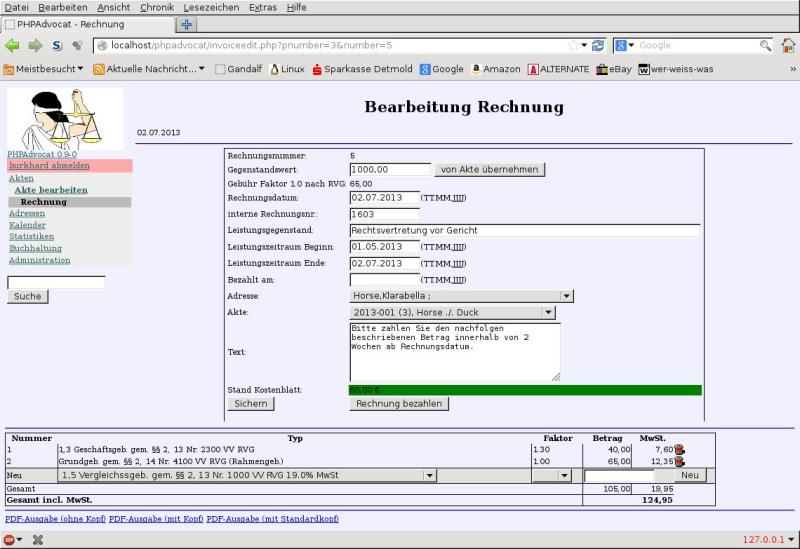
Adressat und Leistungsbeschreibung werden im oberen Bereich gestgelegt, während die Rechnungspositionen in Listenform ergänzt werden. War bei der Neueinrichtung der Rechnung der Gegenstandswert der Akte bekannt, so wird dieser übernommen und der Einheitsbetrag für Gebühren nach RVG berechnet. Wurde der Gegenstandswert nach der Rechnungserstellung ergänzt, kann dieser entweder manuell eingetragen oder über die angelagerten Knöpfe aus dem Gegenstandswert der Akte erechnet und somit ergänzt werden. In letzterem Fall verhindert eine Sicherheitsabfrage ein unabsichtliches Überschreiben.
Die interne Rechnungsnummer wird grundsätzlich aus der höchsten bekannten Nummer +1 berechnet, kann aber jederzeit überschrieben werden. Eine Überprüfung auf Duplikate wird nicht vorgenommen.
Die Leistungsbezeichnung der einzelnen Positionen wird aus dem RVG gewählt, der Betrag aus dem Gegenstandswert nach RVG ermittelt. Bei Honoraren kann statt eines festen Betrages der Multiplikationsfaktor gewählt werden, nach dem (gemäß RVG) der passende Betrag nach dem Gegenstandwert berechnet und ergänzt wird. Der Mehrwertsteuersatz wird ebenfalls als Auswahl-Liste vorgegeben und steht standardmäßig auf "16%". Wird ein Betrag eingegeben, so wird dieser als Netto-Betrag gewertet.
Der Leistungszeitraum ergibt sich aus dem Anlage-Datum der Akte und dem Erstellungsdatum der Rechnung, kann aber manuell korrigiert werden.
Eine vollständige Rechnung kann über die Links im unteren
Bereich der Seite als PDF Formular ausgegeben werden. Das erfordert
zwar einen PDF-Reader auf dem Client-Rechner, doch bleiben auf diese
Weise die Dokumente speicher- und archivierbar und sind zudem
unabhängig von angeschlossenen Druckern.
Im Unteren Bereich
befinden sich drei Links, über die die Rechnung unterschiedliche
aufbereitet wird:
"PDF-Ausgabe (ohne Kopf)" Erzeugt die Rechnung ohne jegliche Dekoration, besonders geeignet für den Druck auf vorbereitetes Briefpapier
"PDF-Ausgabe (mit Kopf)" Erzeugt die Rechnung mit dem unter /files/letterhead.pdf hinterlegtem Hintergrund, also "elektronisches" Briefpapier
"PDF-Ausgabe (mit Standardkopf)" Erzeugt die Rechnung einem automatisch generierten Briefkopf - wenn kein eigenes Breifpapier benutzt werden soll.
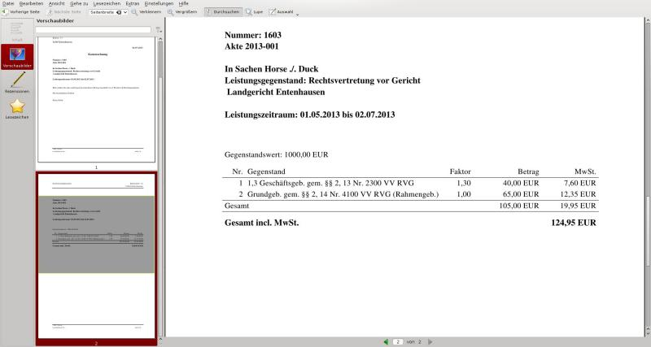
Wurde eine Rechnung bezahlt, so können mit dem Knopf "Rechnung bezahlen" mehrere Aktionen durchgeführt werden: Zunächst wird das aktuelle Datum in das Feld "Bezahlt am" eingetragen. Weiterhin wird in das Kostenblatt der betroffenen Akte der Betrag der Rechnung wie auch im Buchungsjornal ergänzt. Sollte der "bezahlt"-Knopf versehentlich ein weiteres Mal betätigt, so wird ein wiederholter Eintrag abgelehnt, da bereits das Ende-Datum gesetzt wurde.
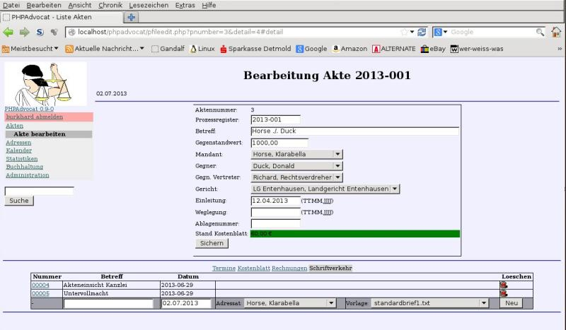
Der Bereich "Schriftverkehr" verwaltet die Dokumente, die im Zusammenhang mit der betreffenden Akte geschrieben werden sollen. Dazu werden in der Zeile zur Neuanlage zunächst der Adressat wie auch die Vorlage ausgewählt, mit der ein neues Schriftstück erstellt werden soll. Der Klick auf den Knopf "Neu" erzeugt zunächst nur ein neues Schriftstück, das als Eintrag in der Tabelle sichtbar wird. Ein Mausklick auf die vorangestellte Nummer öffnet das Schriftstück im Editor, was nach folgendem Muster geschieht:
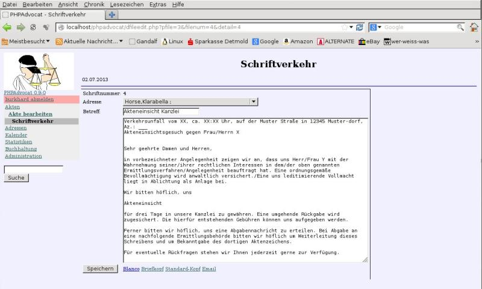
Schriftstücke werden auf dieselbe Art wie Rechnungen aufbereitet,
daher wird auch her jeweils ein PDF-Dokument erzeugt.
Durch die
ausgewählte Dokument-Vorlage werden Standard-Texte zur Verfügung
gestellt, die lediglich an den jeweiligen Zweck angepasst werden
müssen. Die Aufbereitung des Dokumentes erfolgt automatisch, wenn
der jeweilige Link gewählt wird. Der Webserver sendet dann die
generierte Datei an den Client, wo das Dokument mit einem PDF-Viewer
betrachtet und gedruckt werden kann.
Analog zu den Rechnungen
stehen hier vier verschiedene Aufbreitungsarten bereit:
"Blanco" Erzeugt das Dokument ohne jegliche Dekoration, besonders geeignet für den Druck auf vorbereitetes Briefpapier
"Briefkopf" Erzeugt das Dokument mit dem unter /files/letterhead.pdf hinterlegtem Hintergrund, also "elektronisches" Briefpapier
"Standardkopf" Erzeugt das Dokument einem automatisch generierten Briefkopf - wenn kein eigenes Breifpapier benutzt werden soll.
"Email" Ruft den Email-Client auf und füllt die notwendigen Daten (Adresse, Text) ein.
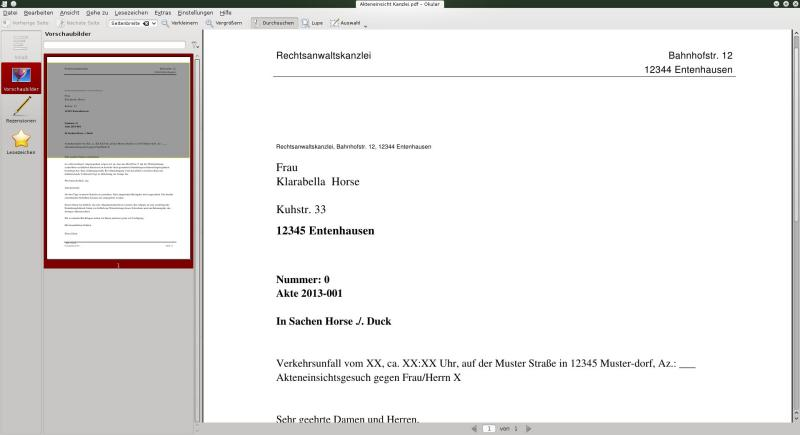
Zwingend notwendig sind die Adressen, um mit Akten arbeiten zu
können. Eine neue Akte kann nur dann angelegt werden, wenn eine
vorhandene Adresse als Mandant angegeben wird. Im Zweifel kann diesen
während des Arbeitsganges zur Aktenanlage geschehen.
Um nun aber
die Adressen bearbeiten zu können, ist das Adressverwaltungsmodul
zuständig. Hier werden alle Adressen in Listenform dargestellt oder
können durch einen Eintrag in der letzten Zeile angelegt werden.
Besondere Bedeutung kommt dabei dem Adress-Typ zu, über den
festgelegt wird, ob es sich um eine Person, eine Firma oder ein
Gericht handelt. Diese Eigenschaft hat Auswirkungen auf die
Auswahlfelder, die in der Aktenverwaltung vorkommen.
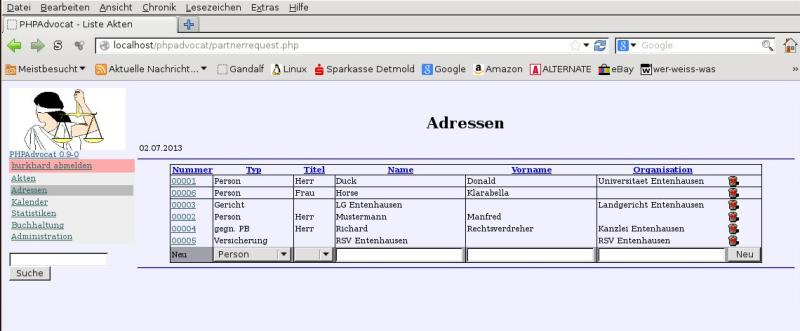
In der Listenform können nur die nötigsten Eingaben gemacht werden, und auch nur bei der Neuanlage. Für Veränderungen und Ergänzungen kann die Detailmaske verwendet werden, die über einen Klick auf die Adressnummer erreicht wird. Auch hier müssen sämtliche Änderungen mit dem Knopf "Sichern" permanent gemacht werden.
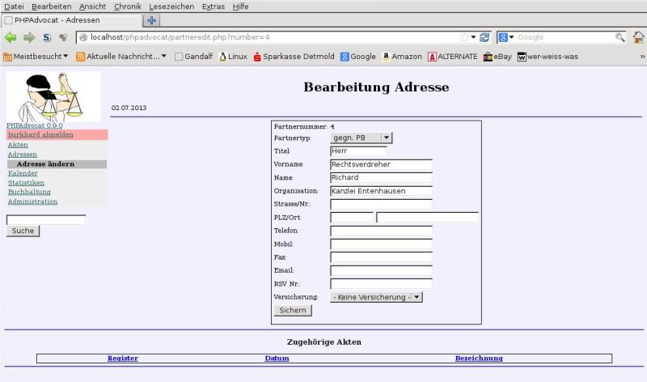
Unter Adressen werden alle Kontakte zusammengefasst, die für die Akten relevant sein können. Die Art des Kontaktes wird unter "Partnertyp" festgelegt. Zur Auswahl stehen dabei:
"Person" als natürliche Person, beispielsweise als mandant oder Gegner
"Firma"
"Gericht"
"gegn. PB", womit der gegnerische Prozessbeauftragte gekennzeichnet wird.
Für eigene Mandanten kann zusätzlich die zuständige Versicherung festgelegt werden, die allerdings ebenfalls als Adresse erfasst sein muss.
Die Kalenderübersicht dient zur Übersicht über Termine zu einem
Bestimmten Tag. Die einzelnen Tage der abgebildeten Monate sind
auswählbar und werden grün hinterlegt, wenn sie aktiv sind. Der
aktive Monat ist zudem noch am unteren Bereich mit Pfeilen versehen,
über die jeweils ein Tag (einfacher Pfeil) oder ein Monat
(Doppelpfeil) weiter oder zurückgesprungen werden kann.
Ein
Termin wird immer mit einer Akte verbunden, die in der Liste als Ling
erscheint und über die zu der betreffenden Akte gesprungen werden
kann.
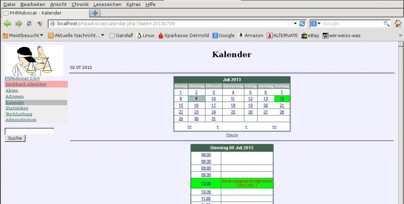
Alle Kosten, die im laufenden Betrieb entstehen, werden zwar in
den Kostenblättern mitgeführt, jedoch hilft das nicht, einen
Überblick über den tatsächlichen Stand der Finanzen zu bekommen.
Weiterhin werden Kosten, die nicht in Verbindung mit einer Akte
entstehen, nicht erfasst, obgleich sie in einer
Gewinn/Verlust-Rechnung nicht fehlen dürfen.
Zu diesem Zweck
existiert ein Buchhaltungsmodul, in dem jede Art von Finanzbewegung
festgehalten werden kann. Bedingt durch das Konzept der Kostenblätter
muss das "Default-Konto" (Nr. 1) zwangsweise existieren, da
bei jedem Eintrag in ein Kostenblatt nach Nettowert und
Umsatzsteuerwert differenziert entsprechend gebucht wird.
Es
können aber noch beliebig viele weitere Konten angelegt werden, um
z.B. Gehälter, Barkasse oder andere Bereiche abdecken zu können. In
der Kontenliste erfolgt dieses durch die Letzte Zeile, die über den
Knopf "Neu" ein neues Konto erzeugt.
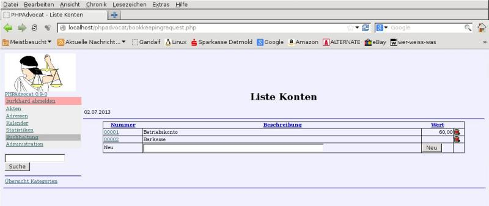
Wird der Link "Übersicht Kategorien" ausgewählt, so
werden die Kategorien als Liste angezeigt. Auch hier können einzelne
Kategorien hinzugefügt oder gelöscht werden.
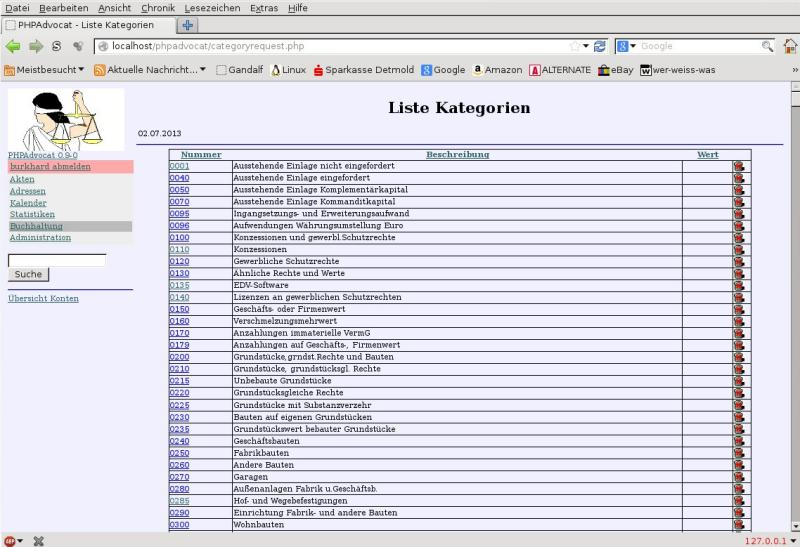
Ein
Klick auf die Konto-Nummer in der Konten-Übersicht führt zur
Buchungs-Maske, in dem ebenfalls in der letzten Zeile Buchungen
hinzugefügt werden. Außer der Beschreibung (Buchungstext) muss die
Kategorie muss aus der Liste ausgewählt werden, um die Buchung
korrekt zuordnen zu können.
Von den zwei Beträgen (Eingang und
Ausgang) sollte normalerweise nur einer mit einem Wert >0 gefüllt
werden. Negative Werte oder Werte in beiden Feldern sind
unübersichtlich und führen leicht zu falschen Ergebnissen.
Jede
Zeile und jede Spalte wird zur Übersicht nochmals mit einer
Gesamtsumme bewertet und der Endwert berechnet.
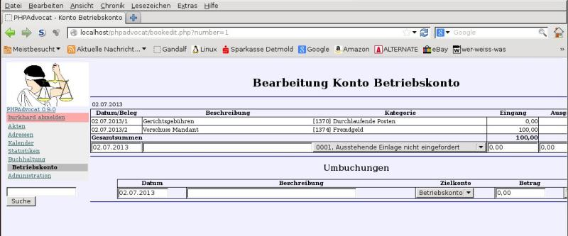
Im unteren Teil können Umbuchungen durchgeführt werden, deren Zweck darin besteht, dass ein Betrag Bilanzneutral von dem angezeigten Konto zu einem anderen übertagen wird. Dabei werden automatisch 2 Buchungen durchgeführt:
Abbuchung von dem aktuellen Konto
Zubuchung zu dem angegebenen Konto
In beiden wird die angegebene Beschreibung eingetragen,so dass der Zusammenhang beider Buchungen nachvollzogen werden kann.
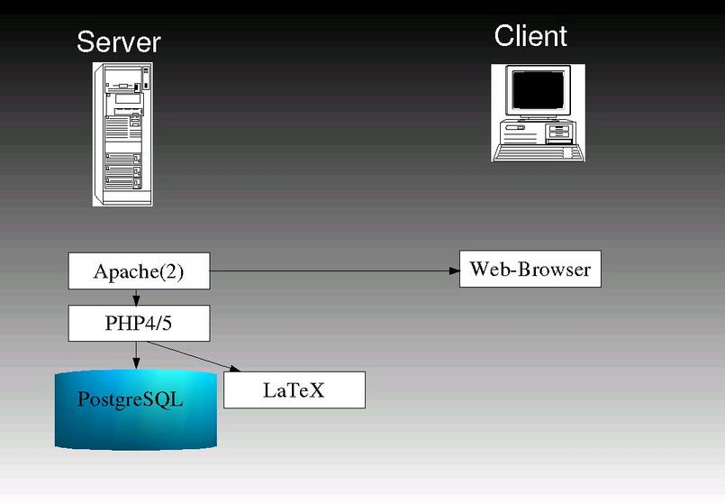
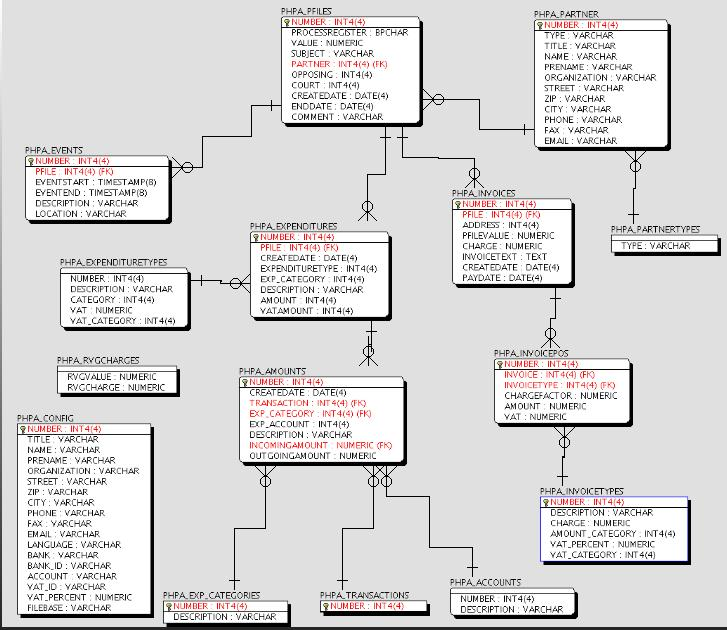